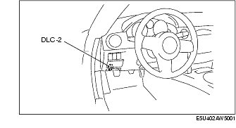

Troubleshooting ➭ BRAKES ➭ ON-BOARD DIAGNOSIS [ABS]
ON-BOARD DIAGNOSIS [ABS]
id0402a7805500
{: #wp1059781}
On-Board Diagnostic (OBD) Test Description
• The OBD test inspects the integrity and function of the ABS and outputs the results when requested by the specific tests.
• On-board diagnostic test also:
- Provides a quick inspection of the ABS usually performed at the start of each diagnostic procedure. {: #wp1059817}- Provides verification after repairs to ensure that no other faults occurred during service.
• The OBD test is divided into 3 tests:
- Read/clear diagnostic results, PID monitor and record and active command modes.
Read/clear diagnostic results
• This function allows you to read or clear DTCs in the ABS HU/CM memory.
PID/Data monitor and record
• This function allows you to access certain data values, input signals, calculated values, and system status information.
Active command modes
• This function allows you to control devices through the M-MDS.
Reading DTCs Procedure
- Connect the M-MDS to the vehicle DLC-2 connector.{: #wp1059956}

- After the vehicle is identified, select the following items from the initial screen of the M-MDS.
• When using the IDS (laptop PC)
- Select the "Toolbox" tab. {: #wp1060010}2. Select "Self Test". {: #wp1060028}3. Select "Modules". {: #wp1060042}4. Select "ABS".
• When using the PDS (Pocket PC)
-
Select "Module Tests". {: #wp1060080}2. Select "ABS". {: #wp1060098}3. Select "Self Test".
-
Verify the DTC according to the directions on the screen.
• If any DTCs are displayed, perform troubleshooting according to the corresponding DTC inspection.
- After completion of repairs, clear all DTCs stored in the ABS. (See Clearing DTCs Procedures.)
Clearing DTCs Procedures
- Connect the M-MDS to the vehicle DLC-2 connector.{: #wp1060178}

- After the vehicle is identified, select the following items from the initial screen of the M-MDS.
• When using the IDS (laptop PC)
- Select the "Toolbox" tab. {: #wp1060232}2. Select "Self Test". {: #wp1060250}3. Select "Modules". {: #wp1060264}4. Select "ABS".
• When using the PDS (Pocket PC)
-
Select "Module Tests". {: #wp1060302}2. Select "ABS". {: #wp1060320}3. Select "Self Test".
-
Verify the DTC according to the directions on the screen.
-
Press the clear button on the DTC screen to clear the DTC.
-
Verify that no DTCs are displayed.
PID/Data Monitor and Record Procedure
- Connect the M-MDS to the vehicle DLC-2 connector.{: #wp1060390}

- After the vehicle is identified, select the following items from the initial screen of the M-MDS.
• When using the IDS (laptop PC)
- Select the "Toolbox" tab. {: #wp1060444}2. Select "DataLogger". {: #wp1060462}3. Select "Modules". {: #wp1060476}4. Select "ABS".
• When using the PDS (Pocket PC)
-
Select "Module Tests". {: #wp1060514}2. Select "ABS". {: #wp1060532}3. Select "DataLogger".
-
Select the applicable PID from the PID table.
-
Verify the PID data according to the directions on the screen.
*Note*{: #wp1060580}
• The PID/Data monitor function is used for monitoring the calculated value. Therefore, if the monitored value of the output parts is not within the specification, inspection of the monitored value of input parts corresponding to applicable output part control is necessary. In addition, because the system does not display output part malfunction as abnormality in the monitored value, it is necessary to inspect the output part individually using a active command modes function.
Active Command Modes Procedure
- Connect the M-MDS to the vehicle DLC-2 connector.{: #wp1060610}

- After the vehicle is identified, select the following items from the initial screen of the M-MDS.
• When using the IDS (laptop PC)
- Select the "Toolbox" tab. {: #wp1060674}2. Select "DataLogger". {: #wp1060692}3. Select "Modules". {: #wp1060706}4. Select "ABS".
• When using the PDS (Pocket PC)
-
Select "Module Tests". {: #wp1060744}2. Select "ABS". {: #wp1060762}3. Select "DataLogger".
-
Select the active command modes from the PID table.
-
Perform the active command modes, inspect the operations for each parts.
• If there is no operation sound from the relay, motor, and solenoid after the active command mode inspection is performed, it is possible that there is an open or short circuit in the wiring harness, relay, motor or solenoid, or sticking and operation malfunction.
DTC Table
|
System malfunction location {: #wp1060921} |
Page {: #wp1060923} |
|
|---|---|---|
|
M-MDS {: #wp1060977} |
||
|
B1317 {: #wp1060837} |
Power supply system {: #wp1060839} |
(See DTC B1317, B1318 [ABS].) {: #wp1060895} |
|
B1318 {: #wp1060942} |
Power supply system {: #wp1060945} |
(See DTC B1317, B1318 [ABS].) {: #wp1060948} |
|
B1342 {: #wp1060952} |
ABS HU/CM system {: #wp1060955} |
(See DTC B1342 [ABS].) {: #wp1060958} |
|
B1484 {: #wp1060962} |
Brake switch system {: #wp1060965} |
(See DTC B1484 [ABS].) {: #wp1060968} |
|
B2477 {: #wp1061097} |
ABS HU/CM configuration {: #wp1061100} |
(See DTC B2477 [ABS].) {: #wp1061103} |
|
C1095 {: #wp1061140} |
Pump motor, motor relay system {: #wp1061143} |
(See DTC C1095, C1096 [ABS].) {: #wp1061146} |
|
C1096 {: #wp1061183} |
Pump motor, motor relay system {: #wp1061186} |
(See DTC C1095, C1096 [ABS].) {: #wp1061189} |
|
C1141 {: #wp1061228} |
LF ABS sensor rotor system {: #wp1061231} |
(See DTC C1141, C1142, C1143, C1144 [ABS].) {: #wp1061234} |
|
C1142 {: #wp1061275} |
RF ABS sensor rotor system {: #wp1061278} |
(See DTC C1141, C1142, C1143, C1144 [ABS].) {: #wp1061281} |
|
C1143 {: #wp1061324} |
LR ABS sensor rotor system {: #wp1061327} |
(See DTC C1141, C1142, C1143, C1144 [ABS].) {: #wp1061330} |
|
C1144 {: #wp1061375} |
RR ABS sensor rotor system {: #wp1061378} |
(See DTC C1141, C1142, C1143, C1144 [ABS].) {: #wp1061381} |
|
C1145 {: #wp1061428} |
RF ABS wheel-speed sensor system {: #wp1061431} |
(See DTC C1145, C1155, C1165, C1175 [ABS].) {: #wp1061434} |
|
C1148 {: #wp1061484} |
RF ABS wheel-speed sensor system {: #wp1061487} |
(See DTC C1148, C1158, C1168, C1178 [ABS].) {: #wp1061490} |
|
C1155 {: #wp1061542} |
LF ABS wheel-speed sensor system {: #wp1061545} |
(See DTC C1145, C1155, C1165, C1175 [ABS].) {: #wp1061548} |
|
C1158 {: #wp1061602} |
LF ABS wheel-speed sensor system {: #wp1061605} |
(See DTC C1148, C1158, C1168, C1178 [ABS].) {: #wp1061608} |
|
C1165 {: #wp1061664} |
RR ABS wheel-speed sensor system {: #wp1061667} |
(See DTC C1145, C1155, C1165, C1175 [ABS].) {: #wp1061670} |
|
C1168 {: #wp1061728} |
RR ABS wheel-speed sensor system {: #wp1061731} |
(See DTC C1148, C1158, C1168, C1178 [ABS].) {: #wp1061734} |
|
C1175 {: #wp1061794} |
LR ABS wheel-speed sensor system {: #wp1061797} |
(See DTC C1145, C1155, C1165, C1175 [ABS].) {: #wp1061800} |
|
C1178 {: #wp1061862} |
LR ABS wheel-speed sensor system {: #wp1061865} |
(See DTC C1148, C1158, C1168, C1178 [ABS].) {: #wp1061868} |
|
C1186 {: #wp1061932} |
Fail-safe relay system {: #wp1061935} |
(See DTC C1186, C1266 [ABS].) {: #wp1061938} |
|
C1194 {: #wp1062004} |
LF outlet solenoid valve system {: #wp1062007} |
(See DTC C1194, C1198, C1210, C1214, C1242, C1246, C1250, C1254 [ABS].) {: #wp1062010} |
|
C1198 {: #wp1062077} |
LF inlet solenoid valve system {: #wp1062080} |
(See DTC C1194, C1198, C1210, C1214, C1242, C1246, C1250, C1254 [ABS].) {: #wp1062083} |
|
C1210 {: #wp1062152} |
RF outlet solenoid valve system {: #wp1062155} |
(See DTC C1194, C1198, C1210, C1214, C1242, C1246, C1250, C1254 [ABS].) {: #wp1062158} |
|
C1214 {: #wp1062229} |
RF inlet solenoid valve system {: #wp1062232} |
(See DTC C1194, C1198, C1210, C1214, C1242, C1246, C1250, C1254 [ABS].) {: #wp1062235} |
|
C1233 {: #wp1062308} |
LF ABS wheel-speed sensor/ABS sensor rotor system {: #wp1062311} |
(See DTC C1233, C1234, C1235, C1236 [ABS].) {: #wp1062314} |
|
C1234 {: #wp1062392} |
RF ABS wheel-speed sensor/ABS sensor rotor system {: #wp1062395} |
(See DTC C1233, C1234, C1235, C1236 [ABS].) {: #wp1062398} |
|
C1235 {: #wp1062478} |
RR ABS wheel-speed sensor/ABS sensor rotor system {: #wp1062481} |
(See DTC C1233, C1234, C1235, C1236 [ABS].) {: #wp1062484} |
|
C1236 {: #wp1062566} |
LR ABS wheel-speed sensor/ABS sensor rotor system {: #wp1062569} |
(See DTC C1233, C1234, C1235, C1236 [ABS].) {: #wp1062572} |
|
C1242 {: #wp1062656} |
LR outlet solenoid valve system {: #wp1062659} |
(See DTC C1194, C1198, C1210, C1214, C1242, C1246, C1250, C1254 [ABS].) {: #wp1062662} |
|
C1246 {: #wp1062745} |
RR outlet solenoid valve system {: #wp1062748} |
(See DTC C1194, C1198, C1210, C1214, C1242, C1246, C1250, C1254 [ABS].) {: #wp1062751} |
|
C1250 {: #wp1062836} |
LR inlet solenoid valve system {: #wp1062839} |
(See DTC C1194, C1198, C1210, C1214, C1242, C1246, C1250, C1254 [ABS].) {: #wp1062842} |
|
C1254 {: #wp1062929} |
RR inlet solenoid valve system {: #wp1062932} |
(See DTC C1194, C1198, C1210, C1214, C1242, C1246, C1250, C1254 [ABS].) {: #wp1062935} |
|
C1266 {: #wp1063024} |
Fail-safe relay system {: #wp1063027} |
(See DTC C1186, C1266 [ABS].) {: #wp1063030} |
|
C1805 {: #wp1063122} |
Incorrect ABS HU/CM installed {: #wp1063125} |
(See DTC C1805 [ABS].) {: #wp1063128} |
|
U0073 {: #wp1063223} |
CAN system communication error {: #wp1063226} |
(See MULTIPLEX COMMUNICATION SYSTEM.) {: #wp1063229} |
|
U1900 {: #wp1063324} |
Communication error to other module {: #wp1063327} |
(See MULTIPLEX COMMUNICATION SYSTEM.) {: #wp1063330} |
|
U2023 {: #wp1063427} |
Abnormal message from PCM {: #wp1063430} |
(See MULTIPLEX COMMUNICATION SYSTEM.) {: #wp1063433} |
PID/DATA Monitor Table
|
Unit/Condition {: #wp1063755} |
Operation condition (reference) {: #wp1063757} |
Action {: #wp1063759} |
ABS HU/CM terminal {: #wp1063761} |
|
|---|---|---|---|---|
|
ABS_VOLT {: #wp1063623} (System battery voltage value) {: #wp1063912} |
V {: #wp1063625} |
• Ignition switch at ON: Approx. 12.2 V {: #wp1063681} • Idling: Approx. 14.1 V {: #wp1063945} |
Inspect the power supply circuit. {: #wp1063684} (See ABS SYSTEM INSPECTION.) {: #wp1063966} |
J {: #wp1063687} |
|
ABSLF_I {: #wp1063788} (Left front inlet solenoid valve output state) {: #wp1063992} |
On/Off {: #wp1063791} |
• Solenoid valve activated: On {: #wp1063794} • Solenoid valve not activated: Off {: #wp1064018} |
Inspect the ABS HU/CM. {: #wp1063797} (See ABS HU/CM INSPECTION.) {: #wp1064035} |
|
|
ABSLF_O {: #wp1063804} (Left front outlet solenoid valve output state) {: #wp1064061} |
On/Off {: #wp1063807} |
• Solenoid valve activated: On {: #wp1063810} • Solenoid valve not activated: Off {: #wp1064087} |
Inspect the ABS HU/CM. {: #wp1063813} (See ABS HU/CM INSPECTION.) {: #wp1064104} |
|
|
ABSLR_I {: #wp1063820} (Left rear inlet solenoid valve output state) {: #wp1064130} |
On/Off {: #wp1063823} |
• Solenoid valve activated: On {: #wp1063826} • Solenoid valve not activated: Off {: #wp1064156} |
Inspect the ABS HU/CM. {: #wp1063829} (See ABS HU/CM INSPECTION.) {: #wp1064173} |
|
|
ABSLR_O {: #wp1063836} (Left rear outlet solenoid valve output state) {: #wp1064199} |
On/Off {: #wp1063839} |
• Solenoid valve activated: On {: #wp1063842} • Solenoid valve not activated: Off {: #wp1064225} |
Inspect the ABS HU/CM. {: #wp1063845} (See ABS HU/CM INSPECTION.) {: #wp1064242} |
|
|
ABSPMPRLY {: #wp1063852} (Motor relay output state) {: #wp1064266} |
On/Off {: #wp1063855} |
• Relay activated: On {: #wp1063858} • Relay not activated: Off {: #wp1064292} |
Inspect the ABS HU/CM. {: #wp1063861} (See ABS HU/CM INSPECTION.) {: #wp1064309} |
|
|
ABSRF_I {: #wp1064326} (Right front inlet solenoid valve output state) {: #wp1064366} |
On/Off {: #wp1064329} |
• Solenoid valve activated: On {: #wp1064332} • Solenoid valve not activated: Off {: #wp1064392} |
Inspect the ABS HU/CM. {: #wp1064335} (See ABS HU/CM INSPECTION.) {: #wp1064409} |
|
|
ABSRF_O {: #wp1064426} (Right front outlet solenoid valve output state) {: #wp1064468} |
On/Off {: #wp1064429} |
• Solenoid valve activated: On {: #wp1064432} • Solenoid valve not activated: Off {: #wp1064494} |
Inspect the ABS HU/CM. {: #wp1064435} (See ABS HU/CM INSPECTION.) {: #wp1064511} |
|
|
ABSRR_I {: #wp1064528} (Right rear inlet solenoid valve output state) {: #wp1064572} |
On/Off {: #wp1064531} |
• Solenoid valve activated: On {: #wp1064534} • Solenoid valve not activated: Off {: #wp1064598} |
Inspect the ABS HU/CM. {: #wp1064537} (See ABS HU/CM INSPECTION.) {: #wp1064615} |
|
|
ABSRR_O {: #wp1064632} (Right rear outlet solenoid valve output state) {: #wp1064678} |
On/Off {: #wp1064635} |
• Solenoid valve activated: On {: #wp1064638} • Solenoid valve not activated: Off {: #wp1064704} |
Inspect the ABS HU/CM. {: #wp1064641} (See ABS HU/CM INSPECTION.) {: #wp1064721} |
|
|
ABSVLVRLY {: #wp1064738} (Fail-safe relay output state) {: #wp1064784} |
On/Off {: #wp1064741} |
• Fail-safe relay is {: #wp1064744} activated: On {: #wp1064812} • Fail-safe relay is deactivated: Off {: #wp1064818} |
Inspect ABS HU/CM. {: #wp1064747} (See ABS HU/CM INSPECTION) {: #wp1064836} |
|
|
BOO_ABS {: #wp1064853} (Brake pedal switch input) {: #wp1064903} |
On/Off {: #wp1064856} |
• Brake pedal depressed: On {: #wp1064859} • Brake pedal released: Off {: #wp1064929} |
Inspect the brake switch. {: #wp1064862} |
N {: #wp1064865} |
|
CCNTABS {: #wp1064947} (Number of continuous codes) {: #wp1064995} |
|
• DTCs detected: {: #wp1064953} 1-255 {: #wp1065019} • No DTCs detected: 0 {: #wp1065031} |
Perform the DTC inspection. {: #wp1064956} |
|
|
LF_WSPD {: #wp1065055} (Left front ABS wheel-speed sensor input) {: #wp1065106} |
KPH, MPH {: #wp1065058} |
• Vehicle stopped: 0 KPH, 0 MPH {: #wp1065061} • Vehicle running: Vehicle speed {: #wp1065137} |
Inspect the ABS wheel-speed sensor. {: #wp1065064} |
E, F {: #wp1065067} |
|
LR_WSPD {: #wp1065156} (Left rear ABS wheel-speed sensor input) {: #wp1065208} |
KPH, MPH {: #wp1065159} |
• Vehicle stopped: 0 KPH, 0 MPH {: #wp1065162} • Vehicle running: Vehicle speed {: #wp1065239} |
Inspect the ABS wheel-speed sensor. {: #wp1065165} |
G, H {: #wp1065168} |
|
PMP_MOTOR {: #wp1065258} (Pump motor output state) {: #wp1065311} |
On/Off {: #wp1065261} |
• Pump motor activated: On {: #wp1065264} • Pump motor not activated: Off {: #wp1065337} |
Inspect the ABS HU/CM. {: #wp1065267} (See ABS HU/CM INSPECTION.) {: #wp1065354} |
|
|
RF_WSPD {: #wp1065371} (Right front ABS wheel-speed sensor input) {: #wp1065426} |
KPH, MPH {: #wp1065374} |
• Vehicle stopped: 0 KPH, 0 MPH {: #wp1065377} • Vehicle running: Vehicle speed {: #wp1065457} |
Inspect the ABS wheel-speed sensor. {: #wp1065380} |
M, O {: #wp1065383} |
|
RR_WSPD {: #wp1065476} (Right rear ABS wheel-speed sensor input) {: #wp1065532} |
KPH, MPH {: #wp1065479} |
• Vehicle stopped: 0 KPH, 0 MPH {: #wp1065482} • Vehicle running: Vehicle speed {: #wp1065563} |
Inspect the ABS wheel-speed sensor. {: #wp1065485} |
I, L {: #wp1065488} |
Active Command Modes Table
|
Output part {: #wp1065737} |
Operation {: #wp1065739} |
Operating condition {: #wp1065741} |
|
|---|---|---|---|
|
LF_INLET {: #wp1065629} |
LF inlet solenoid valve {: #wp1065631} |
On/Off {: #wp1065687} |
Ignition switch at ON {: #wp1065690} |
|
LF_OUTLET {: #wp1065764} |
LF outlet solenoid valve {: #wp1065767} |
||
|
LR_INLET {: #wp1065777} |
LR inlet solenoid valve {: #wp1065780} |
||
|
LR_OUTLET {: #wp1065790} |
LR outlet solenoid valve {: #wp1065793} |
||
|
PMP_MOTOR {: #wp1065803} |
Pump motor {: #wp1065806} |
||
|
RF_INLET {: #wp1065887} |
RF inlet solenoid valve {: #wp1065890} |
||
|
RF_OUTLET {: #wp1065874} |
RF outlet solenoid valve {: #wp1065877} |
||
|
RR_INLET {: #wp1065861} |
RR inlet solenoid valve {: #wp1065864} |
||
|
RR_OUTLET {: #wp1065848} |
RR outlet solenoid valve {: #wp1065851} |